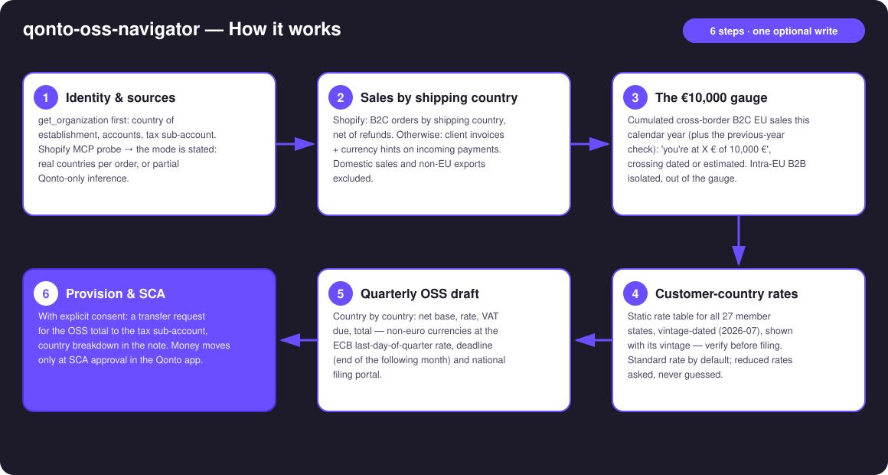
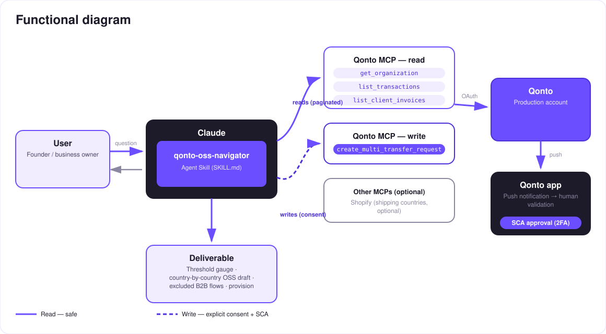

EU e-commerce VAT, before it catches up with you — the €10,000 threshold gauge, a quarterly OSS draft, a provision behind SCA.
Past €10,000 of cross-border B2C sales to other EU countries in a year (one single threshold, ALL distance sales cumulated — not per country), VAT is due at the customer's country rate, declared through the One-Stop Shop. Most e-commerce sellers discover this too late. The skill turns a Qonto account into an OSS watchtower:
Real order-level countries when Shopify is connected; otherwise Qonto inference — announced as partial, never dressed up as full coverage.
Cumulated cross-border B2C sales this year (plus the previous-year check): "you're at X € of 10,000 €", crossing dated or estimated.
Country by country: net base, the customer country's rate (vintage-dated table, all 27 states), VAT due, total, deadline, filing portal.
A transfer request to the tax sub-account — money moves only after SCA approval in the Qonto app.
And intra-EU B2B sales (valid VAT number)? Excluded from OSS — reverse charge, reported separately, never mixed into the gauge. Would someone use this on a Monday morning? Every EU seller shipping abroad has this exact blind spot.
| Prerequisite | Detail | Required |
|---|---|---|
| Qonto production account | Adapts to any organization — get_organization first, nothing hardcoded | ✅ |
| Country | Designed for a seller established in the EU. Threshold and rates: EU-wide rules, valid for every Qonto country. Only the filing portal is national (France: impots.gouv.fr; Germany: BZSt; otherwise your national OSS portal) | ℹ️ detected |
| Qonto MCP connected | Official connector (claude.ai / Claude Desktop), OAuth login | ✅ |
| Shopify MCP | Optional, detected dynamically: real shipping countries (list-orders, run-analytics-query — dashed tool names). Absent → Qonto-only mode, announced as partial | ⭕ recommended |
| A "tax" sub-account | Created once in the app (the MCP has no account-creation tool). Detected by name: tax / taxe / impôt / TVA / OSS | ⭕ recommended — otherwise compute-only |
| Cross-border EU sales | No B2C sales to other EU countries → the skill says so and stops — no invented gauge | ℹ️ detected |

qonto-vat-return) and non-EU exports excluded from the computation
The security model, not a limitation: reads are risk-free; the write requires explicit consent in the conversation and only produces a request. The account holder's own SCA (2FA), in the Qonto app, is what moves money. Neither Claude nor the MCP can.
| Rule | Detail |
|---|---|
| Single threshold | €10,000 net / calendar year, ALL intra-EU cross-border B2C distance sales cumulated (goods + digital TBE services) — assessed on the current and the previous calendar year |
| Below | Home-country VAT allowed (voluntary OSS opt-in possible, binds for 2 years) |
| Above | VAT at the customer's country rate, from the transaction that crosses it — country-by-country registration OR the One-Stop Shop |
| OSS return | Quarterly, filed by the end of the month following the quarter: 30/04 · 31/07 · 31/10 · 31/01 — corrections of past quarters go into the current return; non-euro currencies converted at the ECB rate of the last day of the quarter |
| Exclusions | Domestic sales (→ qonto-vat-return) · intra-EU B2B (reverse charge, EC sales list — not OSS) · non-EU exports |
| Rate | Member states |
|---|---|
| 17% | Luxembourg |
| 18% | Malta |
| 19% | Germany · Cyprus |
| 20% | Austria · Bulgaria · France |
| 21% | Belgium · Czechia · Spain · Lithuania · Latvia · Netherlands · Romania |
| 22% | Italy · Slovenia |
| 23% | Ireland · Poland · Portugal · Slovakia |
| 24% | Estonia · Greece |
| 25% | Denmark · Croatia · Sweden |
| 25.5% | Finland |
| 27% | Hungary |
The skill applies the standard rate by default; when products may qualify for reduced rates (books, food, children's items…), it flags it and asks — never guessed.
| Output | Format | When |
|---|---|---|
| Conversation reply | Markdown tables (gauge, country-by-country draft, excluded flows) | Always — the baseline |
| Interactive dashboard | HTML file/artifact: gauge bar, per-country table, quarter timeline | When the host renders files (claude.ai artifacts, Claude Desktop, Claude Code); automatic fallback to tables |
| Qonto request note | Country-by-country breakdown attached to the request, visible at SCA approval time | Every time a provision is created |
The ≤ 3-minute demo attached to the PR walks through: the threshold trap → the gauge → the country-by-country OSS draft → the provision + SCA approval filmed on a phone → the dashboard. It runs live on a real production account.
| Idea | Effort | Note |
|---|---|---|
| IOSS (imports ≤ €150) | Medium | The import twin of the One-Stop Shop — same engine, different scheme |
| Reduced rates by product category | Medium | Cross Shopify products with each country's reduced-rate categories |
| OSS deadline reminders in the calendar (calendar MCP detected dynamically) | Low | Optional multi-MCP enrichment, in the spirit of the kickoff |
| Quarter-by-quarter gauge history | Low | Reuses the existing scan windows |
| WooCommerce / other order sources | Medium | Same interface: "shipping country per order" |
decline_request after each test (request_type: "multi_transfers", plural)